蝦皮賣家如何一次算出所有商品淨利？賣場總覽使用教學
不用再一個一個算：匯入蝦皮檔案，找出賠錢的規格，批次調價後上傳回蝦皮。
一句話：賣場設定填一次、蝦皮商品匯入一次，所有規格的淨利就列在同一張表。一般日和促銷檔期分開算，賠錢的標紅色；想調價可以依目標利潤率一次回推售價，再產生蝦皮批次更新檔上傳回去。免費、不用登入蝦皮，資料只存在你的瀏覽器。
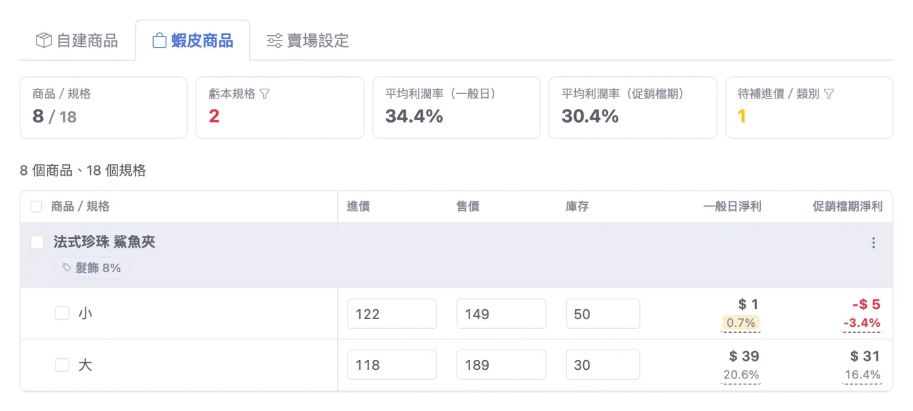
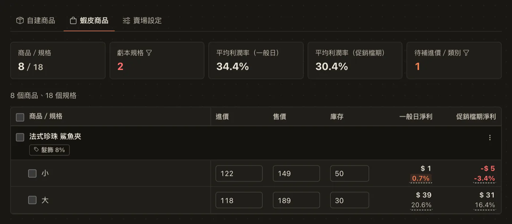
為什麼要一次看所有商品的淨利？
12/11 新制之後，成交手續費依品類細分、促銷檔期加收提高到 4%（商城 5%），每月檔期也變多。同一個商品，一般日有賺、促銷檔期卻可能賠錢；低單價商品被固定比例的費用一扣，常常只剩個位數。
用計算機一筆一筆算當然可以，但商品一多就會遇到：
- 不知道哪幾個規格已經在賠錢
- 改了費率或賣場設定，每個商品都要重算一次
- 算出新售價後，還要回蝦皮賣家中心一個一個改
賣場總覽把這三件事接起來：設定一次、匯入一次，淨利一張表看完，調價後直接產生蝦皮能讀的批次更新檔。
步驟 1：建立賣場，設定只填一次
第一次打開賣場總覽，輸入賣場名稱就會建立一個賣場。到「賣場設定」分頁填一次：
- 賣家類型：一般賣家、商城或蝦皮小舖（決定用哪一種成交手續費率）
- 免運方案：方案一（6.5%）或方案二（$65／單）
- 蝦幣回饋：有沒有參加、長期或短期（只有長期免收促銷檔期加收）
- 稅務與進項發票、低利潤門檻（預設 5%，低於門檻的利潤率會加底色標示）
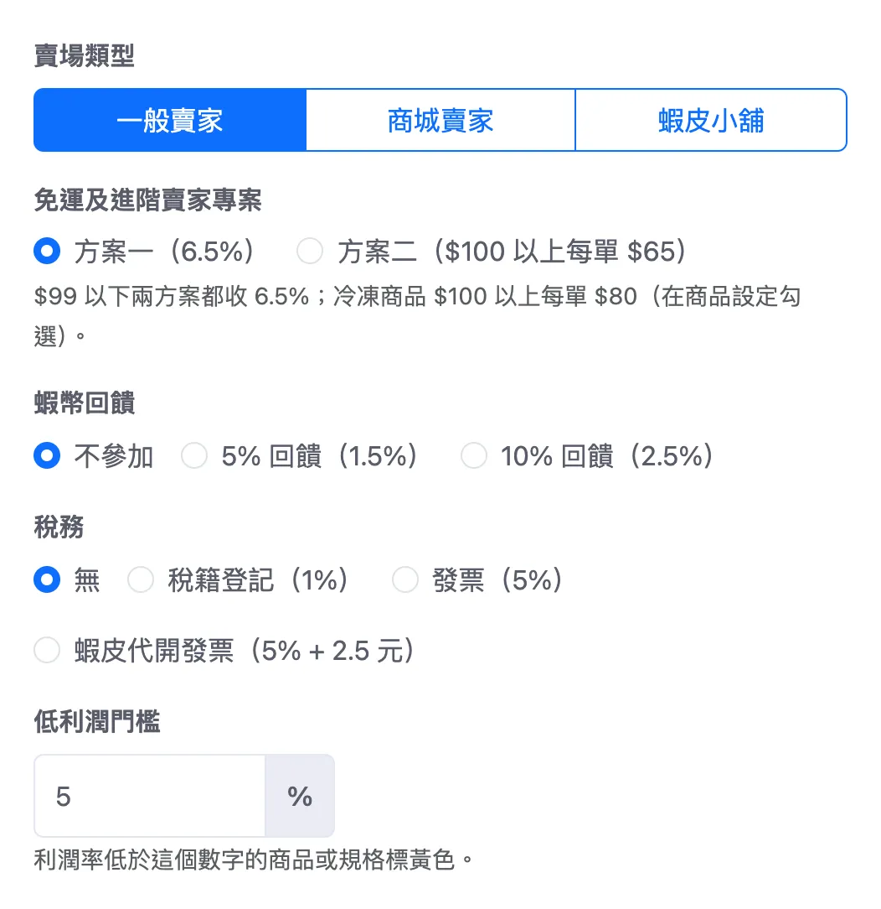
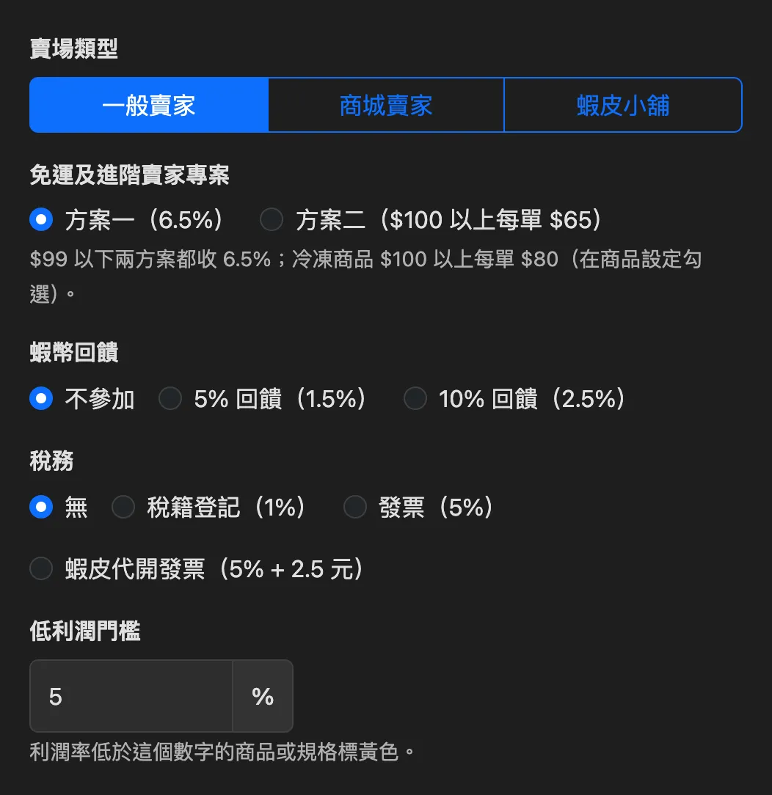
有好幾間賣場（例如一般賣場和商城）的話，用左上角的下拉選單新增、切換，每間各自一套設定。
步驟 2：還沒上架的商品，先用自建商品試算
「自建商品」放你自己加的商品，適合還在評估要不要進貨、或想先定價的新品。按「新增商品」填名稱、進價、售價，選商品類別帶入成交手續費率，表格就會算出一般日和促銷檔期的淨利。
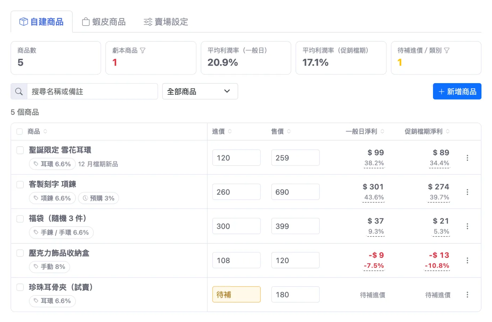
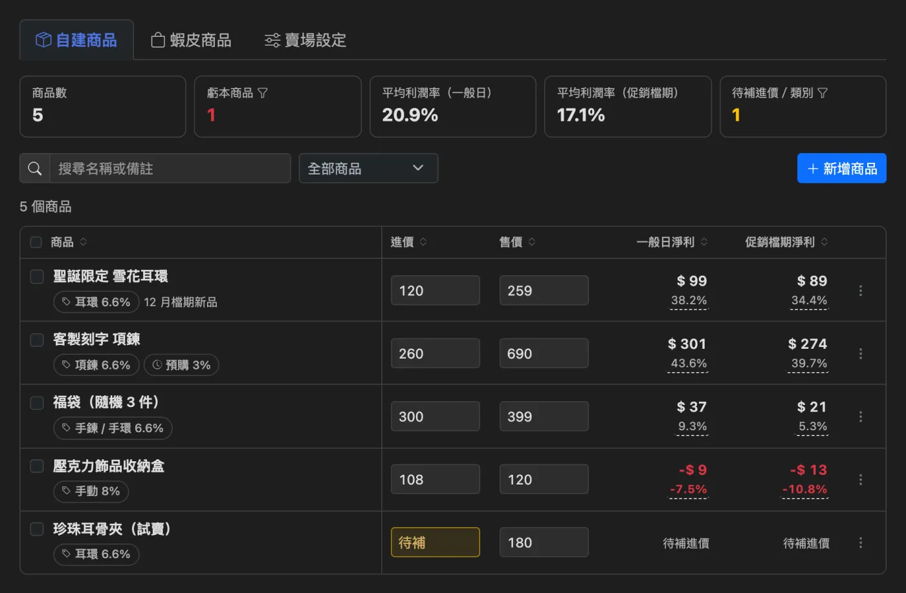
- 點表頭可以依進價、售價、淨利排序；篩選「虧本」「低於門檻」「待補進價／類別」。
- 在快速計算算好的商品，按「儲存到賣場」也會存進這裡，兩邊是同一份資料。
步驟 3：匯入蝦皮商品
已經在蝦皮上架的商品，不用手動一個一個建。到蝦皮賣家中心下載兩份批次模板：
- 電腦登入蝦皮賣家中心 →「我的商品」→ 右上「商品批次編輯工具」→「更新商品資料」。
- 「下載商品模板」選價格及庫存，按「下載」（有售價、庫存）。
- 模板改選備貨天數，再下載一次（有商品分類，用來對應成交手續費率）。
- 等下方「紀錄」出現兩筆檔案後各自下載，回到賣場總覽「蝦皮商品」→「上傳蝦皮檔案」，兩份一起選。


選好檔案後會先顯示確認畫面：每份檔案的規格數、下載時間，以及這次會新增、更新幾個商品，還有成交手續費類別自動對應的結果。
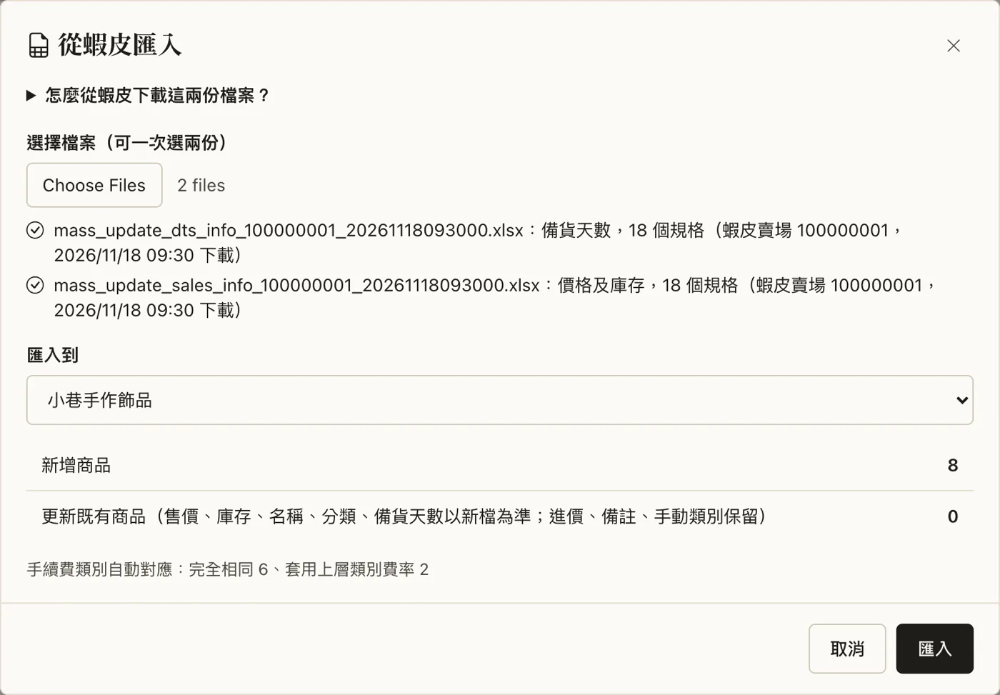
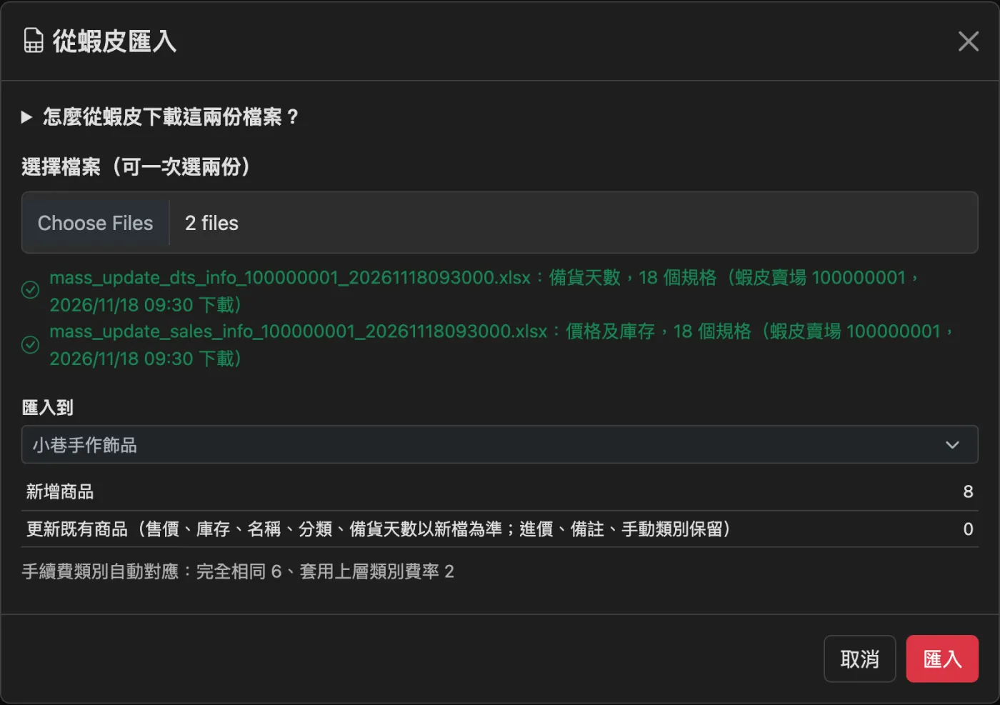
匯入後在表格裡補上每個規格的進價（多個規格同一個進價，可以勾選後用「批次調整」→「設定進價」一次填）。之後重新匯入時，售價、庫存、分類以新檔為準，進價、備註、手動選的類別都會保留。
步驟 4：找出賠錢的規格
上方的摘要卡片會告訴你有幾個虧本規格、一般日與促銷檔期的平均利潤率，以及還有幾個規格待補進價或類別。卡片可以點，點「虧本規格」就只列出賠錢的那幾個。
淨利欄的金額下方是利潤率：負數標紅色、低於門檻加底色標示。滑鼠移到淨利上（手機用點的），會跳出這個規格的費用拆解：
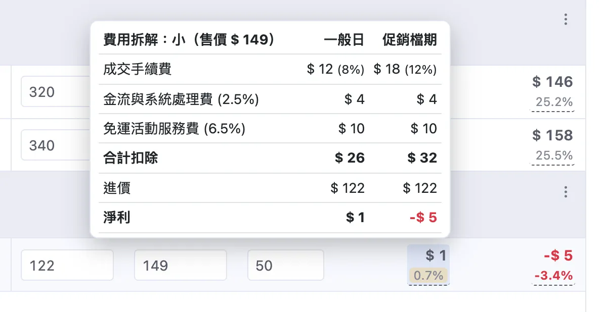
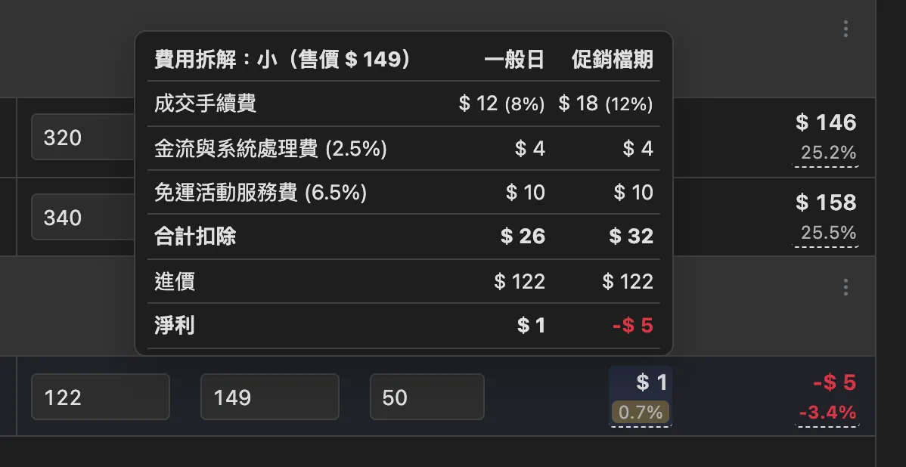
以示範賣場的「法式珍珠鯊魚夾（小）」為例，一般賣家、免運方案一、髮飾類成交手續費 8%：
| 項目 | 一般日 | 促銷檔期 |
|---|---|---|
| 成交手續費 | $12（8%） | $18（8% + 4%） |
| 金流與系統處理費 2.5% | $4 | $4 |
| 免運活動服務費 6.5% | $10 | $10 |
| 淨利 | $1（0.7%） | −$5（−3.4%） |
一般日幾乎沒賺、促銷檔期直接賠錢——這種規格平常很難注意到，表格一排就看出來了。
步驟 5：依目標利潤率批次調價
找到要調整的規格後，勾選它們（勾商品標題列＝選這個商品的所有規格），按「批次調整」：
- 依目標利潤率回推售價：例如設 15%、以一般日或促銷檔期為準，自動算出最低售價
- 漲跌 % 或加減金額：可取到個位、十位或尾數 9；以蝦皮原價為基準，重複套用不會越加越多
- 設定庫存、設定進價、恢復修改
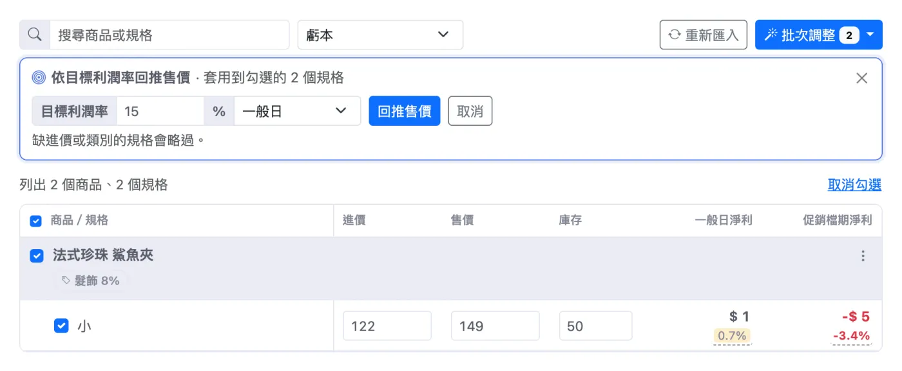
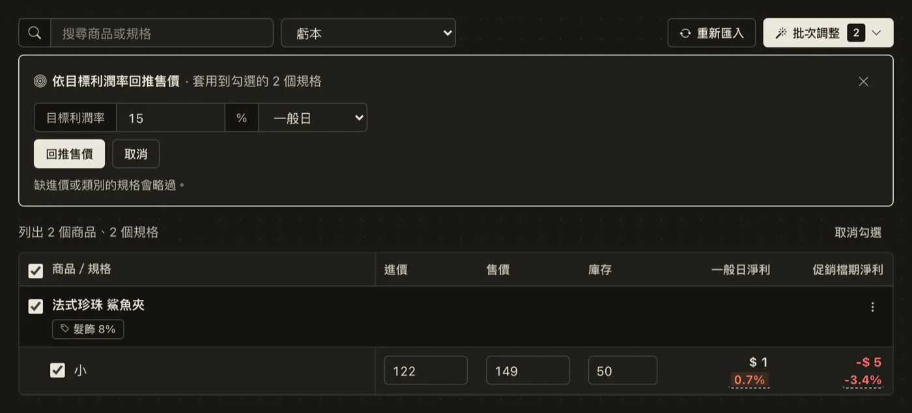
套用後，改過的售價會標色並顯示原價，規格旁多一個「待匯出」標記；底部則顯示有幾個規格待匯出。這些修改只是草稿，還沒動到蝦皮，不滿意可以隨時恢復。
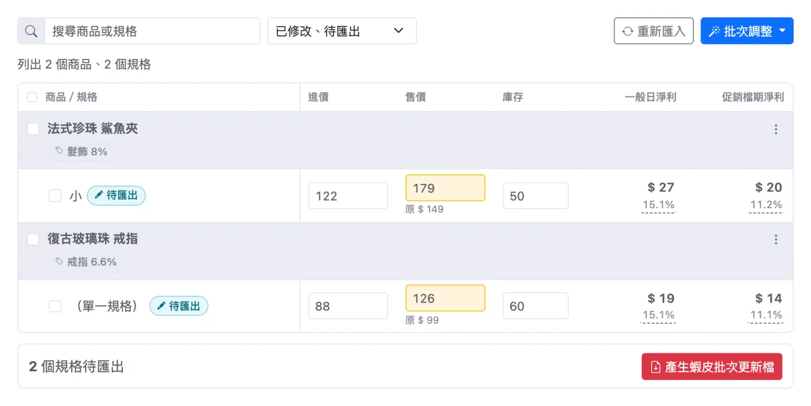
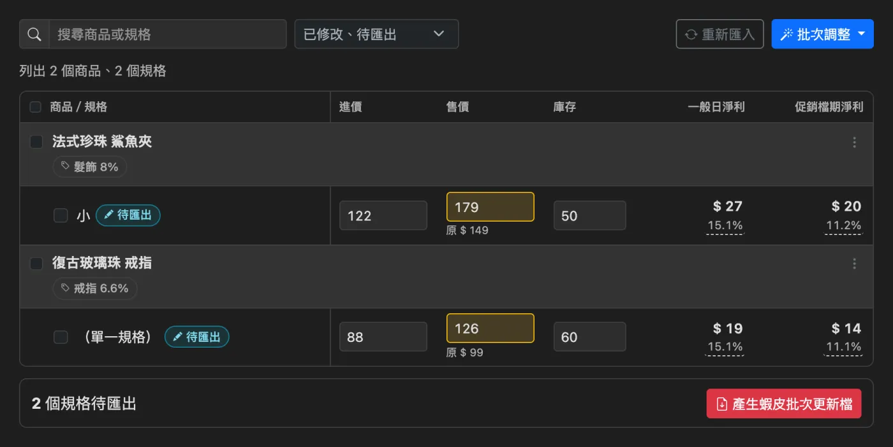
也可以不用批次，直接點表格裡的售價、庫存改數字，一樣會變成待匯出的草稿。
步驟 6：產生批次更新檔，上傳回蝦皮
按底部的「產生蝦皮批次更新檔」，下載前會列出每個規格寫入的售價（舊 → 新）、淨利變化與寫入的庫存：
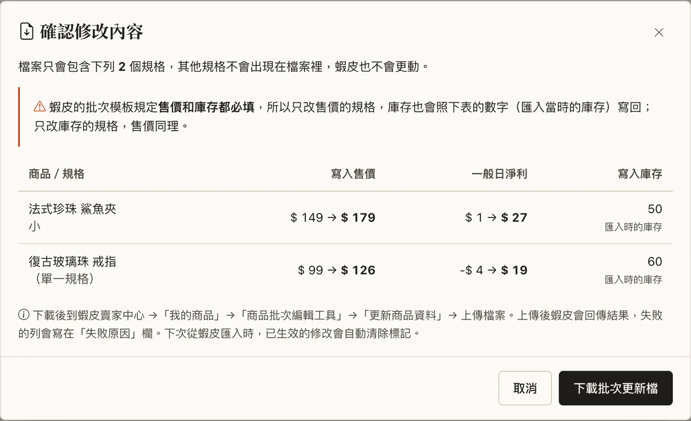
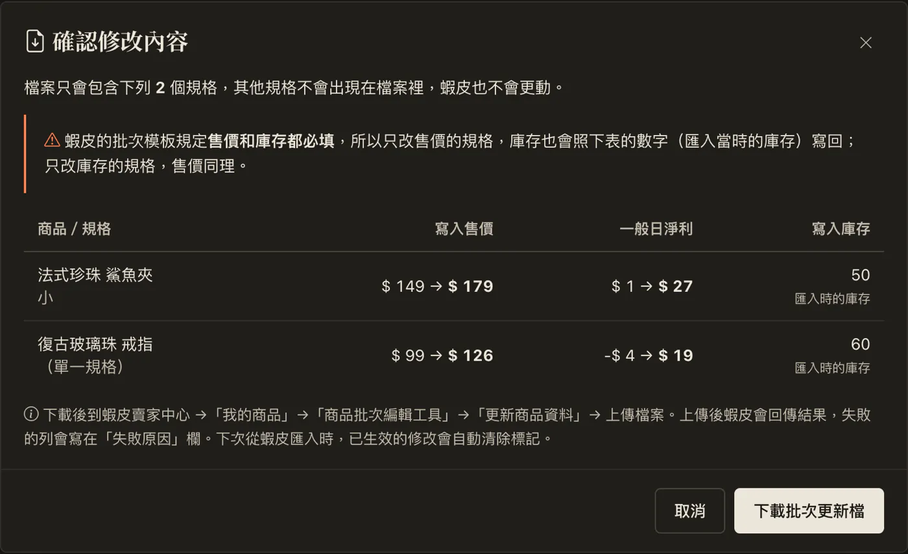
- 按「下載批次更新檔」，檔案以你上傳的「價格及庫存」原檔為底，只保留有修改的規格，其他商品不會被動到。
- 到賣家中心「我的商品」→「商品批次編輯工具」→「更新商品資料」上傳這個檔案。
- 上傳後蝦皮會回傳處理結果，失敗的列會寫在「失敗原因」欄。
- 下次重新匯入時，已經生效的修改會自動清掉「已匯出」標記；沒生效的會列出來提醒你。
手機也能用
手機上表格不會擠成一團：商品名稱固定在左邊，數字欄左右滑動查看。檔案匯入、批次更新檔下載建議用電腦，平常查淨利、改售價用手機就夠了。
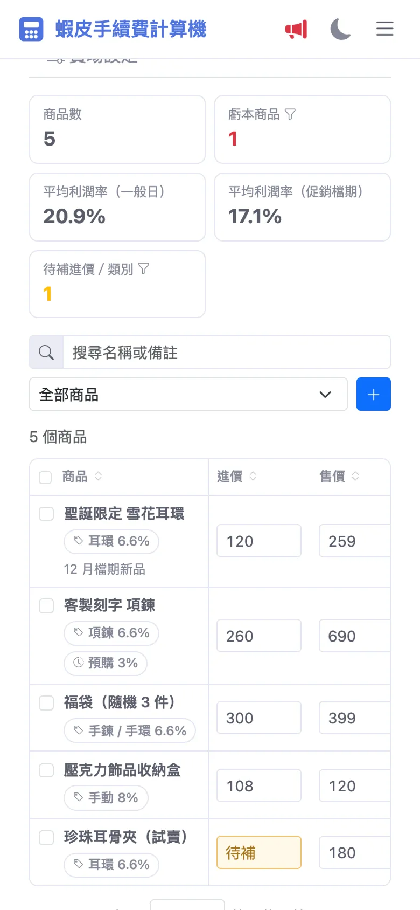
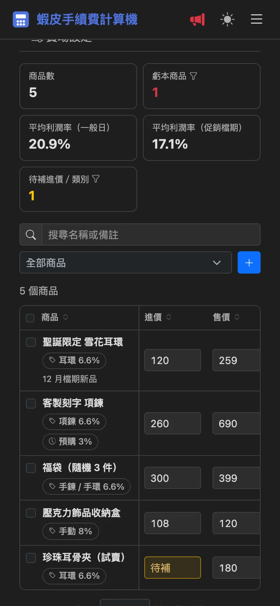
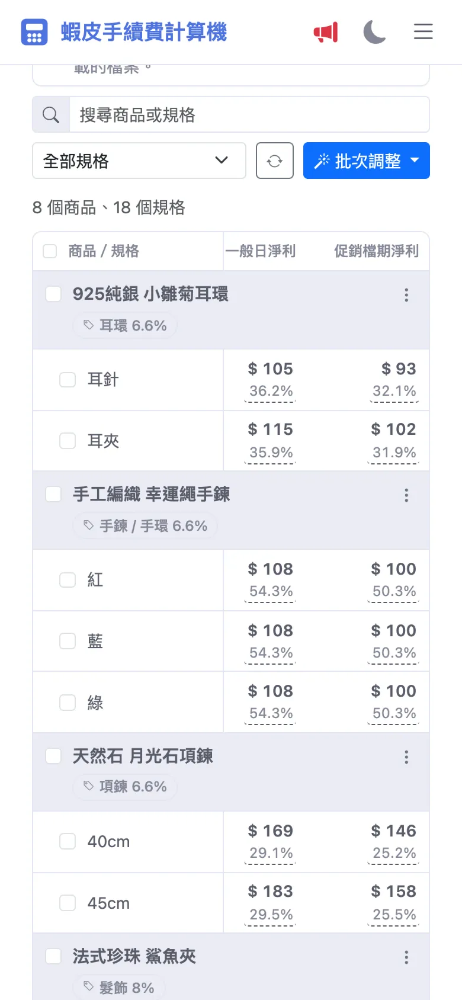
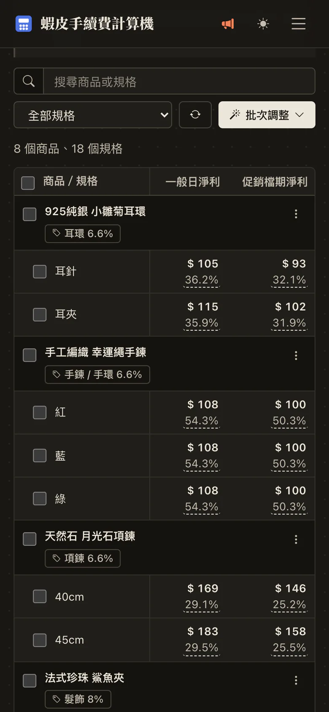
常見問題 Q&A
Q1. 要登入蝦皮嗎？資料會上傳嗎？
不用登入，也不會上傳。商品資料來自你自己下載的檔案，所有計算都在瀏覽器完成，資料只存在這台裝置的瀏覽器。換手機、換電腦或清除瀏覽器資料前，記得用右上「⋯」選單匯出全部資料（JSON）備份，到新裝置再「從 JSON 還原」。
Q2. 成交手續費率怎麼來的？
匯入時依「備貨天數」檔裡的商品分類，自動對應 12/11 新制的品類費率，並依賣場類型取一般賣家或商城費率。對不到的分類請你選一次，之後自動套用；也可以直接輸入手動費率。
Q3. 只改售價，為什麼庫存也會寫回？
蝦皮的批次模板規定售價和庫存都必填，所以會用匯入當時的庫存寫回。中間有賣出的話，先重新匯入再調價。
Q4. 進價會寫進蝦皮嗎？
不會。進價只用來算淨利，批次更新檔只改售價和庫存。重新匯入時，進價、備註、手動選的類別都會保留。
Q5. 促銷檔期的淨利是怎麼算的？
促銷檔期當天，成交手續費會再加收一般賣家 4%、商城 5%（有參加長期蝦幣回饋的免收）。檔期是哪幾天，可以看活動日行事曆。
Q6. 蝦皮小舖也能用嗎？
可以。賣場設定選「蝦皮小舖」，會改用小舖的收費（不收免運服務費、促銷檔期不加收），淨利只有一欄。小舖的規則請看蝦皮小舖懶人包。
文中截圖使用虛構的示範賣場與商品，數字只為說明功能。費率依 2026/12/11 起的蝦皮新制計算，實際收費以蝦皮公告與撥款明細為準。 新制內容請看蝦皮 12/11 新制懶人包。